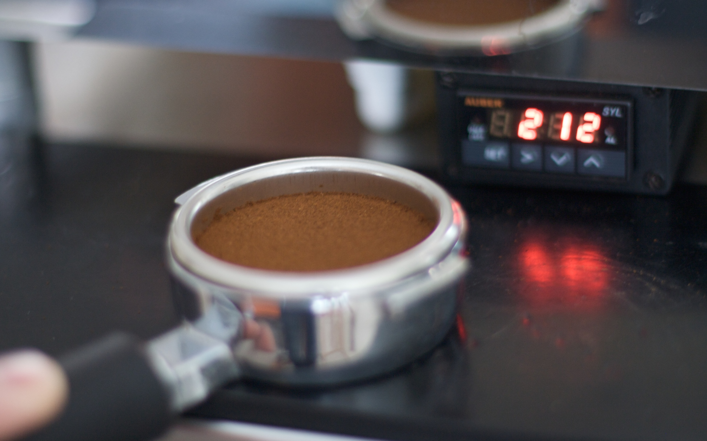

Again, if the dart be successful, then at the second critical instant, that is, when the whale starts to run, the boatheader and harpooneer likewise start to running fore and aft, to the imminent jeopardy of themselves and every one else. It is then they change places; and the headsman, the chief officer of the little craft, takes his proper station in the bows of the boat.
Now, I care not who maintains the contrary, but all this is both foolish and unnecessary. The headsman should stay in the bows from first to last; he should both dart the harpoon and the lance, and no rowing whatever should be expected of him, except under circumstances obvious to any fisherman. I know that this would sometimes involve a slight loss of speed in the chase; but long experience in various whalemen of more than one nation has convinced me that in the vast majority of failures in the fishery, it has not by any means been so much the speed of the whale as the before described exhaustion of the harpooneer that has caused them.
To insure the greatest efficiency in the dart, the harpooneers of this world must start to their feet from out of idleness, and not from out of toil.
Out of the trunk, the branches grow; out of them, the twigs. So, in productive subjects, grow the chapters.